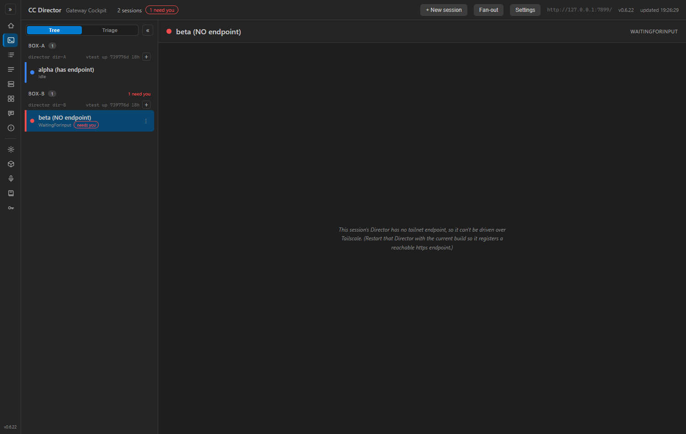

flow:qa-failed)PR #294, branch issue-199-cockpit-logging. This report covers ONLY the
defect QA found; criteria 1-3 were already passed by QA on this branch and are unchanged.
QA's FAIL: the empty-DirectorBase WARNING the original implementation added lived in
TerminalPane.OnAfterRenderAsync, but Cockpit.razor short-circuits an
endpoint-less session to the "no tailnet endpoint" guard message before TerminalPane
is ever rendered. TerminalPane is consumed in exactly one place - the else
branch reached only when TailnetEndpoint is non-empty - while the WARNING
fires only when DirectorBase (bound to that same endpoint) is empty. The two
conditions are mutually exclusive, so the WARNING was unreachable dead code and the
blank-terminal failure mode was never visible in the persisted log.
Emit the blank-terminal WARNING from a path that actually runs for an endpoint-less session, exactly as
QA's fix-direction suggested. The selection funnel Cockpit.OnSelect is the single code path
every selection source routes through (rail click, needs-you nav, deep-link, quick-reply advance - the
deep-link path also calls OnSelect). When the selected session's TailnetEndpoint
is empty, the user has landed on the ungovernable / blank terminal, so a WARNING is written there:
// Cockpit.razor - OnSelect (after the action=select-session INFO line)
if (picked is not null && string.IsNullOrWhiteSpace(picked.TailnetEndpoint))
Log.LogWarning(
"Cockpit empty DirectorBase for sid={Sid} source={Source} (rowState={RowState}); "
+ "session has no tailnet endpoint, live terminal cannot connect - blank-terminal failure mode",
sessionId, source, picked.AssessedState ?? picked.ActivityState);
No null-forgiving operator, pattern-matched null check, structured log fields
(sid + source + rowState) - conforms to docs/CodingStyle.md. The original (now-redundant)
WARNING in TerminalPane is left in place: it is harmless and still documents the same failure
mode at the terminal-mount boundary should the render ever change.
Built the solution (Debug, 0 warnings / 0 errors). Ran the real Cockpit web app with an isolated
CC_DIRECTOR_ROOT (so its log went to a sandbox, not the user's real log dir) pointed at a stub
Gateway that returns two sessions: one with a real tailnetEndpoint (control) and one with an
empty tailnetEndpoint (the blank-terminal case). Drove the live Blazor UI with
Playwright (Chromium, headless): selected the endpoint-having session first, then the endpoint-less session.
Read the persisted log.
| Step | Expected | Actual (persisted log) | Result |
|---|---|---|---|
Select session WITH endpoint (i199-real-0001) |
INFO select-session line, NO WARNING | INFO [Cockpit] ... action=select-session source=rail sid=i199-real-0001 dir=http://qa-test-box.example.ts.net:7887 (no WARNING) |
PASS |
Select ENDPOINT-LESS session (i199-nodir-0002) |
INFO select-session line (dir empty) plus a WARNING for the blank-terminal mode |
INFO [Cockpit] ... action=select-session source=rail sid=i199-nodir-0002 dir=WARN [Cockpit] Cockpit empty DirectorBase for sid=i199-nodir-0002 source=rail (rowState=WaitingForInput); session has no tailnet endpoint, live terminal cannot connect - blank-terminal failure mode
|
PASS |
cockpit-c4.log)2026-06-10 19:26:26.021 INFO [Cockpit] Cockpit action=select-session source=rail sid=i199-real-0001 dir=http://qa-test-box.example.ts.net:7887 2026-06-10 19:26:27.555 INFO [Cockpit] Cockpit action=select-session source=rail sid=i199-nodir-0002 dir= 2026-06-10 19:26:27.556 WARN [Cockpit] Cockpit empty DirectorBase for sid=i199-nodir-0002 source=rail (rowState=WaitingForInput); session has no tailnet endpoint, live terminal cannot connect - blank-terminal failure mode

No architecture or security drift. This moves one diagnostic WARNING to a reachable code path; no container boundary, data flow, or DT-rule changes.
dotnet build cc-director.sln - Build succeeded, 0 Warning(s), 0 Error(s).I believe this is finished. Criterion 4 - "the blank-terminal failure mode (empty DirectorBase / no connect) is now visible in the persisted log. Proof: the WARNING line." - is now satisfied by a WARNING that actually fires through the live UI, proven above.
Reproduction tooling (committed alongside): stub_gateway.py,
drive.py. Not product code.